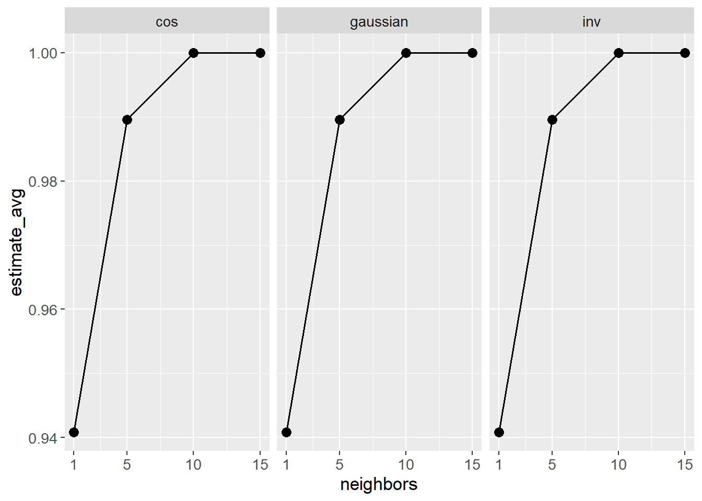

Show the code
set.seed(1337)
library("tidymodels")
tidymodels::tidymodels_prefer()
library("dials")Set seed and load packages.
set.seed(1337)
library("tidymodels")
tidymodels::tidymodels_prefer()
library("dials")Load data.
data("iris")
iris <- iris |>
tibble::as_tibble() |>
filter(Species != "setosa") |>
droplevels()
iris_folds <- vfold_cv(iris)A classical and simple example of a hyperparameter is the number of neighbors (k) in a k-nearest neighbors (KNN) algorithm. This is a hyperparameter as it is not estimated during model fitting, but is specified a priori making it impossible to optimize during parameter estimation.
In the tidymodels universe, hyperparameters are marked for tuning in the specifications for a model. To exemplify, both the number of nearest neighbors and a range of weight functions are tuned.
knn_spec <- nearest_neighbor(neighbors = tune(),
weight_func = tune()) |>
set_engine(engine = "kknn",
trace = 0) |>
set_mode("classification")Secondly, the recipe is set up. As no preprocessing is applied (e.g. log-transformation) it is quite simple.
knn_rec <- recipe(Species ~ ., # Use all other columns as predictors
data = iris)The specs and recipe is then combined into a workflow:
knn_wflow <- workflow() |>
add_model(knn_spec) |>
add_recipe(knn_rec)It is possible to inspect which hyperparameters are being tuned, check which values that are tested and change those values. This is done through the use of the dials package.
# Check hyperparameters
knn_spec |> extract_parameter_set_dials()Collection of 2 parameters for tuning
identifier type object
neighbors neighbors nparam[+]
weight_func weight_func dparam[+]# Check values tested
knn_spec |> extract_parameter_set_dials() |>
extract_parameter_dials("weight_func")Distance Weighting Function (qualitative)10 possible values include:'rectangular', 'triangular', 'epanechnikov', 'biweight', 'triweight', 'cos', ... # Change values, save in new object
knn_params <- knn_spec |>
extract_parameter_set_dials() |>
update(weight_func = weight_func(c("cos", "inv", "gaussian")),
neighbors = neighbors(c(1, 15)))
# Check that it is updated
knn_params |>
extract_parameter_dials("weight_func")Distance Weighting Function (qualitative)3 possible values include:'cos', 'inv' and 'gaussian' knn_params |>
extract_parameter_dials("neighbors")# Nearest Neighbors (quantitative)
Range: [1, 15]Different grid_* functions exist to combine the hyperparameters, e.g. grid_random() and grid_regular(). As exemplified below, grid_regular() combines the parameters in all possible ways dependent on the number of levels chosen.
grid_regular(knn_params,
levels = 4)# A tibble: 12 × 2
neighbors weight_func
<int> <chr>
1 1 cos
2 5 cos
3 10 cos
4 15 cos
5 1 inv
6 5 inv
7 10 inv
8 15 inv
9 1 gaussian
10 5 gaussian
11 10 gaussian
12 15 gaussian A metric is needed to measure the performance of the hyperparameters. The ROC curve is used. The regular grid is tuned:
# Performance metric
roc <- metric_set(roc_auc)
# Tuning
knn_tune <- knn_wflow |>
tune_grid(iris_folds,
grid = knn_params |> grid_regular(levels = 4),
metrics = roc)
knn_tune# Tuning results
# 10-fold cross-validation
# A tibble: 10 × 4
splits id .metrics .notes
<list> <chr> <list> <list>
1 <split [90/10]> Fold01 <tibble [12 × 6]> <tibble [0 × 3]>
2 <split [90/10]> Fold02 <tibble [12 × 6]> <tibble [0 × 3]>
3 <split [90/10]> Fold03 <tibble [12 × 6]> <tibble [0 × 3]>
4 <split [90/10]> Fold04 <tibble [12 × 6]> <tibble [0 × 3]>
5 <split [90/10]> Fold05 <tibble [12 × 6]> <tibble [0 × 3]>
6 <split [90/10]> Fold06 <tibble [12 × 6]> <tibble [0 × 3]>
7 <split [90/10]> Fold07 <tibble [12 × 6]> <tibble [0 × 3]>
8 <split [90/10]> Fold08 <tibble [12 × 6]> <tibble [0 × 3]>
9 <split [90/10]> Fold09 <tibble [12 × 6]> <tibble [0 × 3]>
10 <split [90/10]> Fold10 <tibble [12 × 6]> <tibble [0 × 3]>To visualize the performance:
knn_tune |>
unnest(cols = .metrics) |>
select(id, .metric, neighbors, weight_func, .estimate) |>
group_by(neighbors, weight_func) |>
mutate(estimate_avg = mean(.estimate)) |>
ggplot(aes(x = neighbors,
y = estimate_avg)) +
geom_point() +
geom_line() +
scale_x_continuous(breaks = c(1, 5, 10, 15)) +
facet_wrap(~ weight_func)
It would seem there is no visual difference between the weight functions. For the number of neighbors, the performance is highest for 10 and 15 neighbors. Preferably, the simplest of the two models is chosen.
final_hyperparams <- tibble(weight_func = "gaussian",
neighbors = 10)
final_knn_wflow <- knn_wflow |>
finalize_workflow(final_hyperparams)
final_knn_wflow══ Workflow ════════════════════════════════════════════════════════════════════
Preprocessor: Recipe
Model: nearest_neighbor()
── Preprocessor ────────────────────────────────────────────────────────────────
0 Recipe Steps
── Model ───────────────────────────────────────────────────────────────────────
K-Nearest Neighbor Model Specification (classification)
Main Arguments:
neighbors = 10
weight_func = gaussian
Engine-Specific Arguments:
trace = 0
Computational engine: kknn The model can now be fit to the data and used for prediction.
final_knn_fit <- final_knn_wflow |>
fit(iris)
final_knn_fit══ Workflow [trained] ══════════════════════════════════════════════════════════
Preprocessor: Recipe
Model: nearest_neighbor()
── Preprocessor ────────────────────────────────────────────────────────────────
0 Recipe Steps
── Model ───────────────────────────────────────────────────────────────────────
Call:
kknn::train.kknn(formula = ..y ~ ., data = data, ks = min_rows(10, data, 5), kernel = ~"gaussian", trace = ~0)
Type of response variable: nominal
Minimal misclassification: 0.07
Best kernel: gaussian
Best k: 10